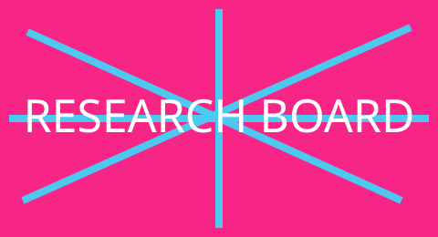
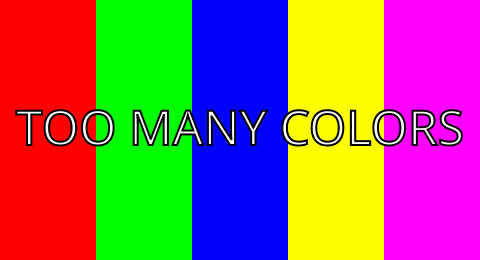
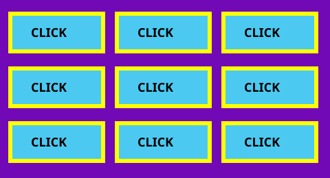
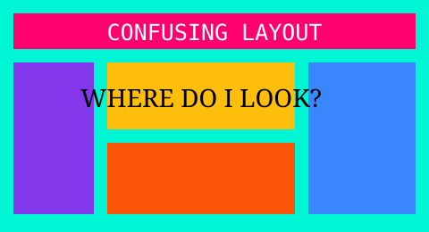

Research Inspiration
My first inspiration was the classic LINGsCARS website. It fills the screen with competing messages, pictures, headings, statistics, and calls to action. I was interested in how its dense visual energy encourages visitors to explore while also making it difficult to decide where to look first. I borrowed the ideas of crowded banners, repeated commands, intense colors, and excessive visual choices for my satire.
My second inspiration was the Yale School of Art website. Its collaborative wiki-like presentation can look unconventional compared with a carefully controlled commercial site. I studied its experimental character and its willingness to let visual styles compete. For my project, I exaggerated that idea by combining mismatched colors, typography, spacing, boxes, and image sizes.
Four More Pictures




Design Principle I Exaggerated
I exaggerated repetition. Repetition normally helps a website feel consistent, but my site repeats messages and visual elements so often that they become irritating and lose meaning. “CLICK,” “MORE,” and “JOIN TODAY” appear many times in unrelated colors, positions, and sizes. The satire demonstrates that even a useful design principle can become harmful when used without limits.
Colors and Web Attributes I Dislike
I dislike combinations of very bright pink, green, yellow, and blue when they compete for attention. I also dislike crowded layouts, unclear navigation, inconsistent fonts, overlapping elements, misleading buttons, unnecessary movement, and content without enough breathing room. I included those problems intentionally to defend why this deserves the title “Worst Website in the World.”
Assignment Reflection
How it could be easier: A numbered checklist and one completed sample page would make the technical requirements easier to track.
Difficulty/ease rating: 3 out of 5.
Enjoyment rating: 5 out of 5 because intentionally breaking design rules helped me understand why the rules matter.